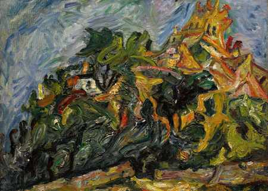
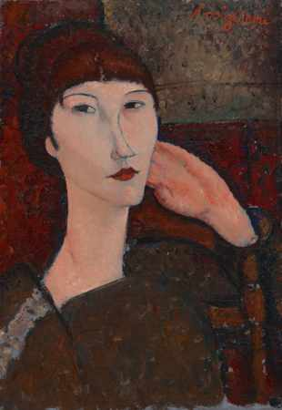
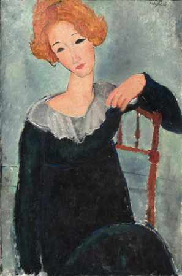
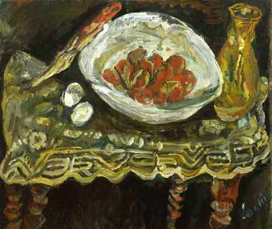

PEINTURE FIGURATIVE MODERNE · PARIS
Une rencontre avec l’art.
Une signature pour votre intérieur.
Portraits, paysages et natures mortes : découvrez la peinture moderne à travers les regards de Modigliani et Soutine.
Découvrir les œuvres
NOTRE UNIVERS ARTISTIQUE
Figuratif. Moderne.
Intensément humain.
Des sujets reconnaissables, visages, paysages, objets, transformés par la couleur, la ligne et la matière. Notre sélection s’inscrit dans la peinture figurative moderne du début du XXe siècle.
ÉCOLE DE PARIS / PORTRAITS / PAYSAGES / NATURES MORTES

Trois regards à découvrir
PAYSAGE · PEINTURE MODERNE
Chaïm Soutine
Vue de Céret
Un paysage où les lignes du relief et les maisons semblent traversées par le mouvement.
Se renseigner auprès de la galerie

PORTRAIT · PEINTURE MODERNE
Amedeo Modigliani
Femme aux cheveux roux
La couleur des cheveux dialogue avec la douceur des traits : un portrait tout en présence.
Se renseigner auprès de la galerie

NATURE MORTE · PEINTURE MODERNE
Chaïm Soutine
Nature morte aux fruits
Des fruits, de la couleur, de la matière : les objets du quotidien deviennent un sujet à regarder autrement.
Se renseigner auprès de la galerie
L’art se partage.
Je m’appelle Paul Dechewsky. Depuis plus de trente ans, la peinture fait partie de ma vie : je la pratique, je l’expose et je la partage. Avec DEDAL DE COULEURS, j’ai envie de vous faire découvrir les artistes qui me touchent et de laisser une place à vos propres coups de cœur.
Découvrir la galerieGardons le lien.
Recevez les actualités de la galerie et les annonces de nos expositions.
M’inscrire aux actualités